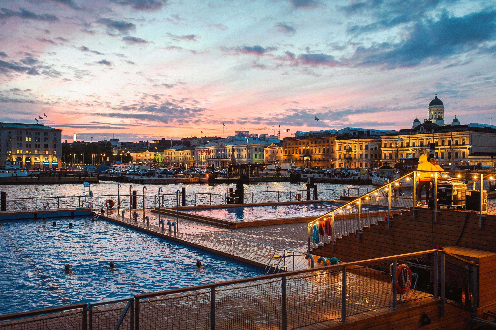
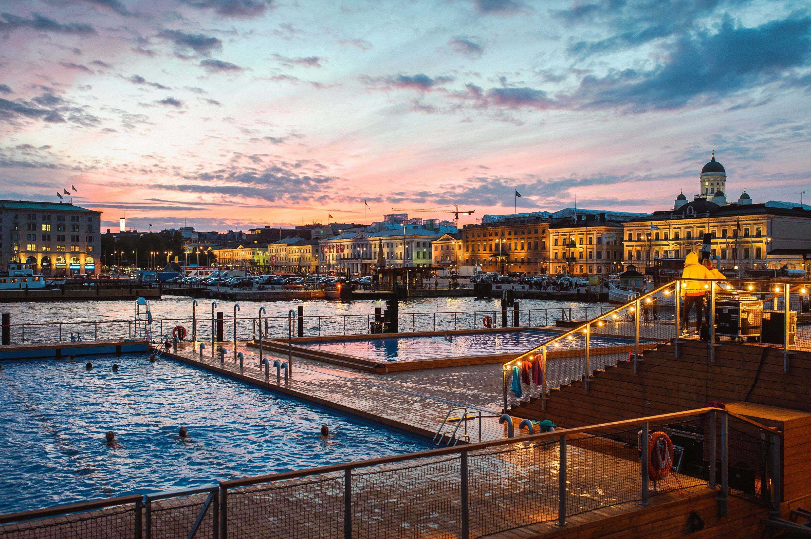

Explorez Helsinki
Les revenus influencent le choix des expériences présentées sur cette page : en savoir plus

 

Europe > Finlande > Uusimaa > Helsinki Visiter:Helsinki
Helsinki : informations
Située au bord de la Baltique, la ville moderne et cosmopolite d'Helsinki a été désignée Capitale mondiale du design en 2012. La beauté de la nature alentour se mêle harmonieusement aux exploits high-tech et aux modes contemporaines de la ville. Lors de vos excursions à pied dans le centre-ville, vous découvrirez les vestiges de son histoire, ainsi qu'une architecture moderne et des designs dernier cri qui révèlent le désir de la ville d'aller de l'avant. Partez en été pour profiter des journées interminables ou partez à l'aventure en hiver pour profiter des longues soirées enneigées.
Helsinki : les immanquables
Se divertir
Des lieux à voir, des rues à explorer et des expériences emblématiques. Tout afficher

Forteresse de Suomenlinna
Sites historiques, Bases & Installations militaires

Eglise Temppeliaukion
Bâtiments architecturaux, Sites religieux

Cathédrale d'Helsinki
Églises et cathédrales

Cathédrale Ouspenski
Sites religieux

Musée de plein air de Seurasaari
Sites historiques, Musées d'histoire

Helsinki Tram System
Tramways

Place du Sénat
Monuments et points d'intérêt

Central Library Oodi
Bibliothèques

The Esplanadi Park
Sentiers historiques, Parcs